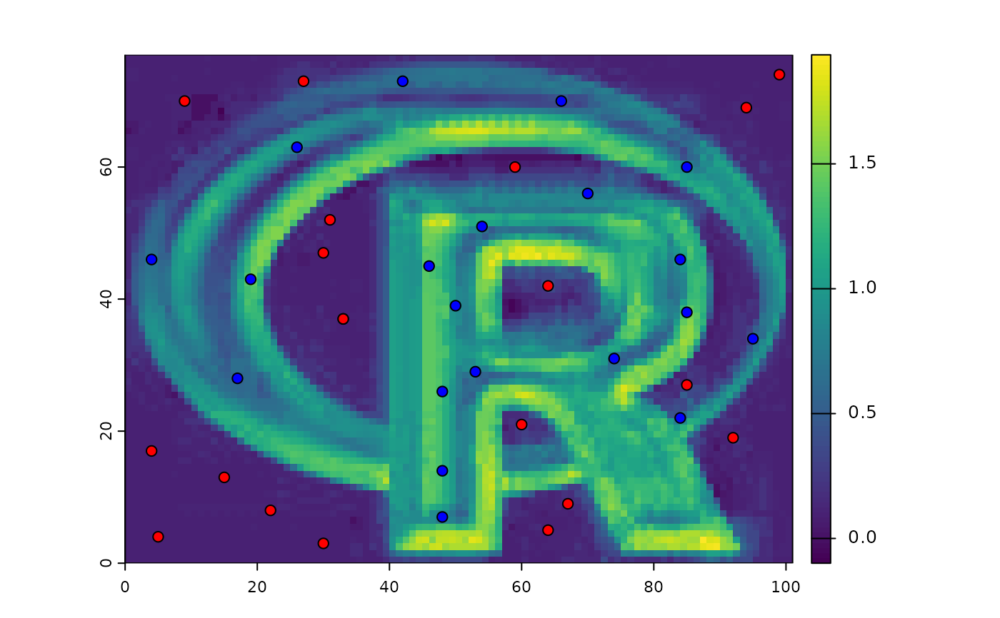
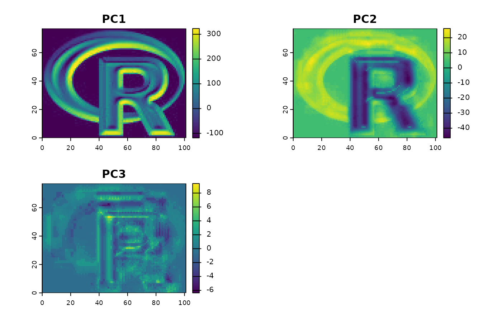

Spatial model predictions
predict.RdMake a SpatRaster with predictions from a fitted model object (for example, obtained with glm or randomForest). The first argument is a SpatRaster object with the predictor variables. The names in the SpatRaster should exactly match those expected by the model. Any regression like model for which a predict method has been implemented (or can be implemented) can be used.
The method should work if the model's predict function returns a vector, matrix or data.frame (or a list that can be coerced to a data.frame). In other cases it may be necessary to provide a custom "predict" function that wraps the model's predict function to return the values in the required form. See the examples.
This approach of using model predictions is commonly used in remote sensing (for the classification of satellite images) and in ecology, for species distribution modeling.
Usage
# S4 method for class 'SpatRaster'
predict(object, model, fun=predict, ..., const=NULL, na.rm=FALSE,
index=NULL, cores=1, cpkgs=NULL, filename="", overwrite=FALSE, wopt=list())Arguments
- object
SpatRaster
- model
fitted model of any class that has a "predict" method (or for which you can supply a similar method as
funargument. E.g. glm, gam, or randomForest- fun
function. The predict function that takes
modelas first argument. The default value ispredict, but can be replaced with e.g. predict.se (depending on the type of model), or your own custom function- ...
additional arguments for
fun- const
data.frame. Can be used to add a constant value as a predictor variable so that you do not need to make a SpatRaster layer for it
- na.rm
logical. If
TRUE, cells withNAvalues in the any of the layers ofxare removed from the computation (even if theNAcell is in a layer that is not used as a variable in the model). This option prevents errors with models that cannot handleNAvalues when making predictions. In most other cases this will not affect the output. However, there are some models that return predicted values even if some (or all) variables areNA- index
integer or character. Can be used to to select a subset of the model output variables
- cores
positive integer. If
cores > 1, a 'parallel' package cluster with that many cores is created and used- cpkgs
character. The package(s) that need to be loaded on the nodes to be able to run the model.predict function (see examples)
- filename
character. Output filename
- overwrite
logical. If
TRUE,filenameis overwritten- wopt
list with named options for writing files as in
writeRaster
See also
interpolate for spatial model prediction
Examples
logo <- rast(system.file("ex/logo.tif", package="terra"))
names(logo) <- c("red", "green", "blue")
p <- matrix(c(48, 48, 48, 53, 50, 46, 54, 70, 84, 85, 74, 84, 95, 85,
66, 42, 26, 4, 19, 17, 7, 14, 26, 29, 39, 45, 51, 56, 46, 38, 31,
22, 34, 60, 70, 73, 63, 46, 43, 28), ncol=2)
a <- matrix(c(22, 33, 64, 85, 92, 94, 59, 27, 30, 64, 60, 33, 31, 9,
99, 67, 15, 5, 4, 30, 8, 37, 42, 27, 19, 69, 60, 73, 3, 5, 21,
37, 52, 70, 74, 9, 13, 4, 17, 47), ncol=2)
xy <- rbind(cbind(1, p), cbind(0, a))
# extract predictor values for points
e <- extract(logo, xy[,2:3])
# combine with response (excluding the ID column)
v <- data.frame(cbind(pa=xy[,1], e))
#build a model, here with glm
model <- glm(formula=pa~., data=v)
#predict to a raster
r1 <- predict(logo, model)
plot(r1)
points(p, bg='blue', pch=21)
points(a, bg='red', pch=21)

# logistic regression
model <- glm(formula=pa~., data=v, family="binomial")
#> Warning: glm.fit: algorithm did not converge
#> Warning: glm.fit: fitted probabilities numerically 0 or 1 occurred
r1log <- predict(logo, model, type="response")
# to get the probability and standard error
r1se <- predict(logo, model, se.fit=TRUE)
# or provide a custom predict function
predfun <- function(model, data) {
v <- predict(model, data, se.fit=TRUE)
cbind(p=as.vector(v$fit), se=as.vector(v$se.fit))
}
r2 <- predict(logo, model, fun=predfun)
### principal components of a SpatRaster
pca <- prcomp(logo)
# or use sampling if you have a large raster
# and cannot process all cell values
sr <- spatSample(logo, 100000, "regular")
pca <- prcomp(sr)
x <- predict(logo, pca)
plot(x)

## parallelization
if (FALSE) { # \dontrun{
## simple case with GLM
model <- glm(formula=pa~., data=v)
p <- predict(logo, model, cores=2)
## The above does not work with a model from a contributed
## package, as the package needs to be loaded in each core.
## Below are three approaches to deal with that
library(randomForest)
rfm <- randomForest(formula=pa~., data=v)
## approach 0 (not parallel)
rp0 <- predict(logo, rfm)
## approach 1, use the "cpkgs" argument
rp1 <- predict(logo, rfm, cores=2, cpkgs="randomForest")
## approach 2, write a custom predict function that loads the package
rfun <- function(mod, dat, ...) {
library(randomForest)
predict(mod, dat, ...)
}
rp2 <- predict(logo, rfm, fun=rfun, cores=2)
## approach 3, write a parallelized custom predict function
rfun <- function(mod, dat, ...) {
ncls <- length(cls)
nr <- nrow(dat)
s <- split(dat, rep(1:ncls, each=ceiling(nr/ncls), length.out=nr))
unlist( parallel::clusterApply(cls, s, function(x, ...) predict(mod, x, ...)) )
}
library(parallel)
cls <- parallel::makeCluster(2)
parallel::clusterExport(cls, c("rfm", "rfun", "randomForest"))
rp3 <- predict(logo, rfm, fun=rfun)
parallel::stopCluster(cls)
plot(c(rp0, rp1, rp2, rp3))
### with two output variables (probabilities for each class)
v$pa <- as.factor(v$pa)
rfm2 <- randomForest(formula=pa~., data=v)
rfp <- predict(logo, rfm2, cores=2, type="prob", cpkgs="randomForest")
} # }